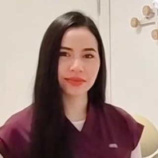
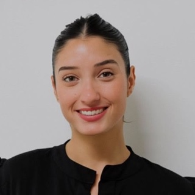

Alquilá un consultorio equipado en pleno centro de Montevideo por turno fijo semanal (todos los lunes de tarde, todos los miércoles de mañana) listo para recibir a tus pacientes.
Sin alquilar un consultorio entero. Y si necesitás otro horario, lo reservás por hora desde la app.

Un modelo pensado para profesionales que no necesitan un consultorio todos los días.
Mañana o tarde, un día fijo de la semana. Elegís el que te sirve y ese turno queda reservado a tu nombre. Siempre el mismo, siempre tuyo.
El consultorio está equipado y listo. Vos traés tus pacientes, del resto nos ocupamos nosotros. Tenés sala de espera y un espacio propio para trabajar entre consultas.
Tus pacientes saben dónde encontrarte y a qué hora: la misma dirección, el mismo día, todas las semanas. Y si un día necesitás más, reservás horas sueltas desde la app.
Todo lo que hace cómoda la jornada ya está resuelto antes de que llegues. Vos traés tu instrumental y tus pacientes.
Sin costos de entrada y sin gastos comunes: el turno es tu único gasto fijo.
Tu turno fijo es la base, no el techo. Desde la app ves los horarios libres del resto de la semana y reservás por hora, sólo cuando lo necesitás.
Cada espacio está preparado para el tipo de atención que das.
Consultorio odontológico en Montevideo con equipamiento moderno y completo, listo para que brindes una atención de alta calidad a tus pacientes. Ver el consultorio dental →
Salas tranquilas con camilla y taburete rodante, pensadas para crear un entorno propicio para la relajación y la sanación del cuerpo.
Un ambiente cuidado para que puedas brindar una atención especializada, con la privacidad que tu trabajo requiere.
Así son por dentro los consultorios de WeClinic en Río Branco y 18 de Julio.
Algunos de los profesionales que atienden a sus pacientes en WeClinic.
Llegué a WeClinic buscando un consultorio para empezar a atender a mis pacientes y quedé fascinada con la elección. Me permitió desarrollarme profesionalmente y darles una atención de primera, en un lugar impecable, armonioso y moderno. Y sus dueñas están atentas a cada detalle para que nos sintamos cómodos.

Damiana AlemánOdontólogaDesde el primer día me siento cómoda, acompañada y con todo lo necesario para dar un servicio de calidad. Además cuento siempre con Fernanda y Jéssica, que están a disposición ante cualquier consulta. Sin dudas, es un espacio que me permite trabajar y crecer profesionalmente con mucha tranquilidad.

Salomé FontesTerapeuta corporalHace unos meses que trabajo en WeClinic y la verdad, una experiencia divina. El lugar es hermoso, súper prolijo, espacioso, y la gente que trabaja un 10: entienden los espacios y rubros de cada uno y siempre ayudan si es necesario. Es una oportunidad bárbara para quien quiere empezar y no tiene la posibilidad de espacio o económica, o simplemente para tener un lugar que reúna todo, sin preocuparse por nada más que atender pacientes.

WeClinic nació de dos amigas con un sueño en común: emprender en salud y bienestar.
Viví en primera persona lo que cuesta instalarse: conseguir un consultorio, sostenerlo, hacerlo funcionar. Armamos el espacio que me hubiera gustado encontrar en mis inicios: un lugar donde ejercer con comodidad y sentirme como en casa.
Un buen relacionamiento es la base de un buen ambiente de trabajo. Me ocupo de que cada profesional que atiende acá se sienta parte de algo, no un inquilino más.
Río Branco y 18 de Julio
Montevideo, Centro
En pleno eje del centro, donde tus pacientes ya se mueven.
Lo que más nos consultan sobre alquilar un consultorio en Montevideo.
Alquilás un turno fijo semanal (una mañana o una tarde de un día concreto) y ese turno queda reservado a tu nombre todas las semanas. El consultorio está equipado y listo: vos traés a tus pacientes. No alquilás un consultorio entero ni pagás los días que no atendés.
En Río Branco y 18 de Julio, pleno centro de Montevideo. Está a metros de 18 de Julio, conectado con las principales líneas de ómnibus y con estacionamientos y servicios en la zona.
Sí. Además de tu turno fijo, desde la app ves los horarios libres del resto de la semana y reservás por hora cuando lo necesitás: una urgencia, un paciente que sólo puede otro día o una hora extra cuando se te llena la agenda.
Tenemos consultorios preparados para odontología (con sillón dental), terapia corporal (con camilla) y estética. Si tu especialidad no está en la lista, escribinos y vemos si el espacio te sirve.
El consultorio equipado y con aire acondicionado, sala de espera con baño para tus pacientes, un espacio propio donde trabajar entre consultas, cocina equipada, lockers y Wi-Fi de alta velocidad. Todo entra en el precio del turno: no hay costo de entrada ni gastos comunes. Sumado al acceso a la app para reservar horas sueltas.
Sí. Coordinamos una visita con vos y te mostramos los consultorios, la sala de espera y las áreas comunes, sin compromiso. Escribinos al +598 98 616 259 o por Instagram y arreglamos día y hora.
El precio depende del turno y de la especialidad. Escribinos al +598 98 616 259, por Instagram o a info@weclinic.uy contándonos qué días necesitás y te pasamos la disponibilidad y el valor.
Contanos qué días necesitás y qué especialidad tenés. Te respondemos enseguida, y si querés conocer el lugar coordinamos una visita.
Escribinos por WhatsAppO por Instagram · info@weclinic.uy